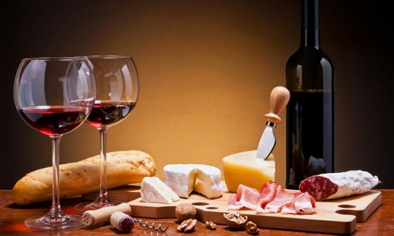

Un buen maridaje
¿Qué es el maridaje?
El maridaje es el proceso de combinar alimentos con vino, es decir, seleccionar el vino que mejor se ajuste a las características organolépticas del alimento, para potenciar todos sus matices. El objetivo del maridaje es ofrecer al paladar sensaciones agradables que inviten a disfrutar de una comida con un buen vino. Este proceso es muy recurrente entre los profesionales de la enología y la gastronomía, pero también entre los paladares aficionados.
Selección de vinos para cada alimento:
Existen combinaciones que son más recomendables dependiendo del tipo de comida.
No olvidar que el maridaje es cuestión de gustos.
Las anteriores son recomendaciones generalizadas que ayudan a seleccionar los vinos que más se ajusten al menú, pero no dejan de ser eso, cuestiones globales. Al final, todo depende de nuestra propia experiencia combinando sabores, conociendo vinos, texturas y sensaciones. Habitualmente, cuando un vino se disfruta bebiéndolo solo, sin acompañamiento, puede ajustarse sin problemas a cualquier plato siempre que se respeten las normas básicas comentadas.
